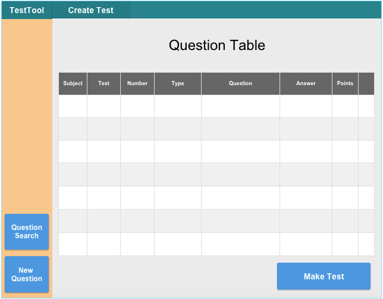

When the instructor navigates to the question bank, he/she is presented
with the screen in Figure 1.

Figure 1: Empty Question Bank.
Since the teacher has not made questions or tests yet, the question bank is empty.
The list of questions saved in the question bank is presented in a table
view providing a brief overview of all the questions available. The
instructor has the option of clicking a question to open it in the
screen, or selecting
one or more questions and clicking the "Make Test" button to create a new
test and open the